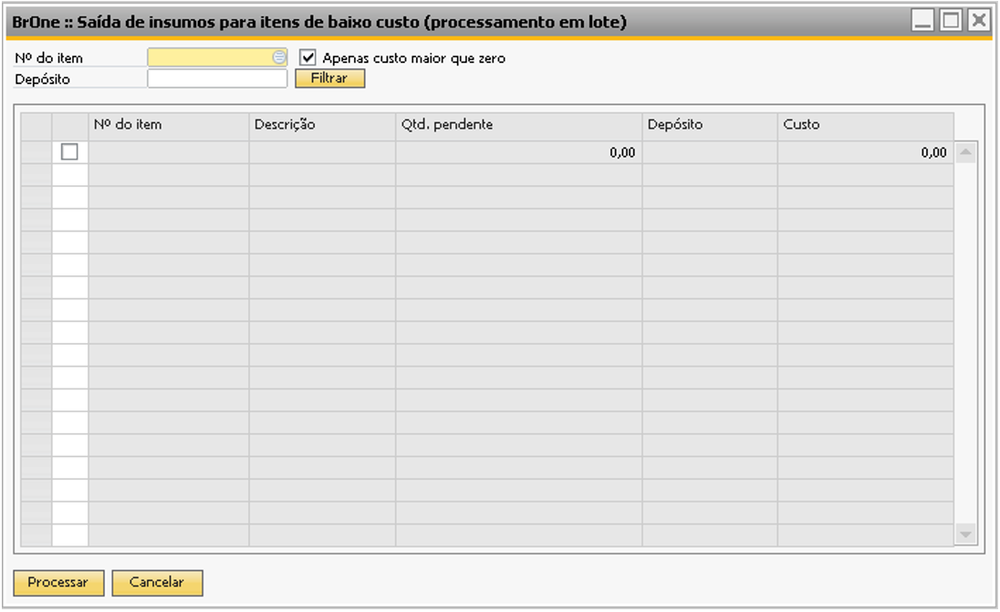
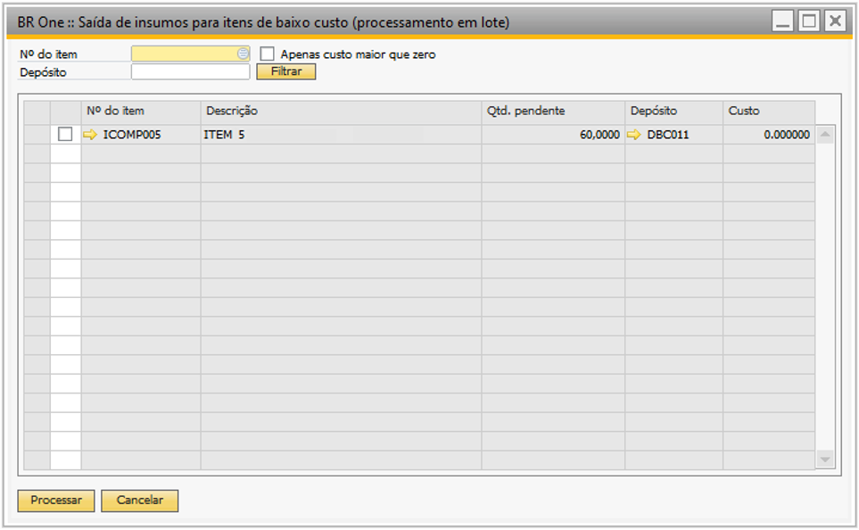
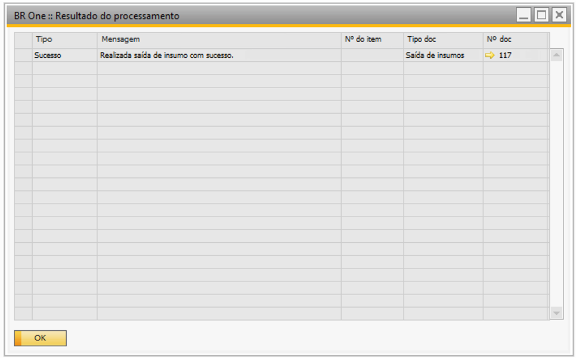
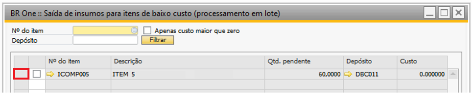
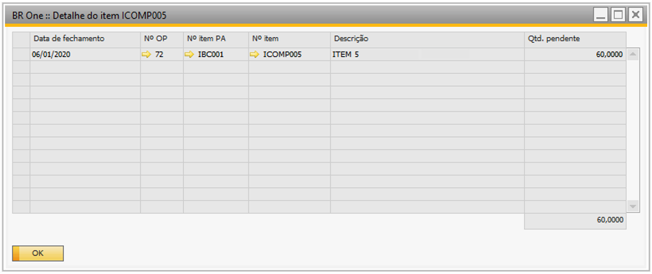
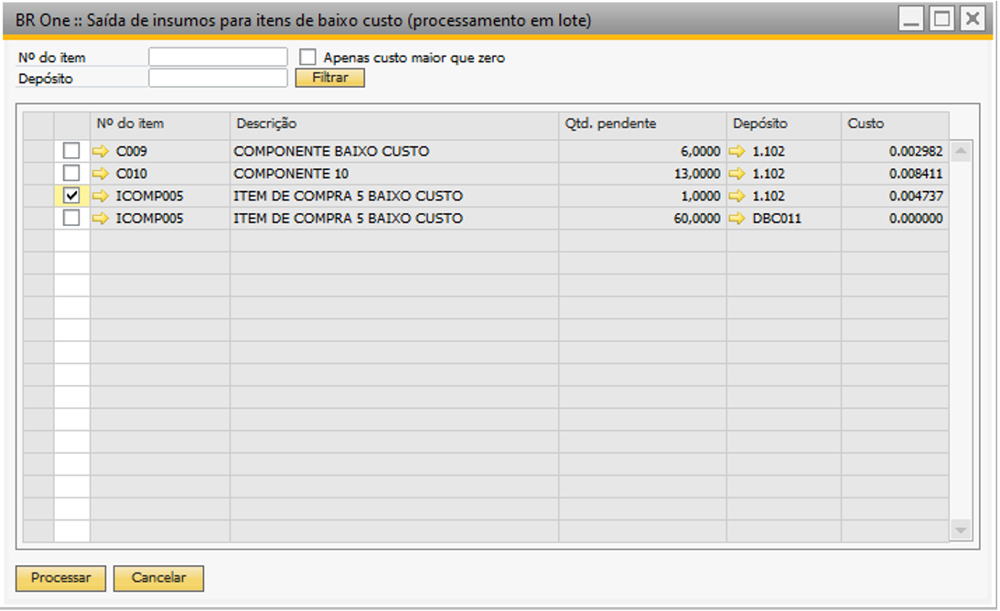
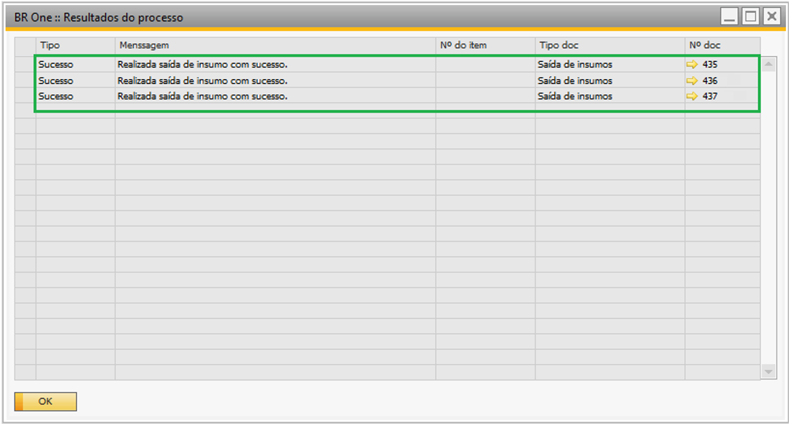

Saída de insumos para itens de baixo custo
Essa tela tem relação direta com a configuração Realizar saída dos insumos com baixa manual ao fechar OP.
Para os itens que não tenha sido possível realizar a saída pelo baixo custo, a saída poderá ser realizada em momento posterior, pois no assistente é possível visualizar os insumos que ainda não foram realizados as baixas manuais no momento do fechamento da OP.
Para acessar a tela de Saída de insumos para itens de baixo custo é necessário ir no menu:
Produção -> Manutenção -> Saída de insumos para itens de baixo custo
{kind=link}
Há 3 opções de filtros:
-Nº do item: traz apenas o item selecionado; -Depósito: traz apenas itens com o depósito selecionado; -Apenas custo maior que zero: traz apenas itens cujo custo seja maior que 0.
{kind=link}
Para realizar a saída para os itens, ele deve ser selecionado e o usuário deve clicar em Processar. Se o item selecionado tiver o custo igual a 0, a saída não será realizada e a seguinte mensagem será exibida:
{kind=link}
BR One :: Nenhuma linha com custo maior que zero foi selecionada.
Caso o item tenha custo maior que 0, ao processar, o resultado do processamento será exibido na tela Resultados do processo.
{kind=link}
Ao dar duplo clique no começo da linha do item, a tela de detalhes do item será aberta, informando a data de fechamento da OP, o nº da OP, Nº item PA, Nº item, Descrição e Qtd. pendente.
 {kind=link}
{kind=link}
No momento que o usuário selecionar a linha do insumo ao qual ele deseja processar, o sistema verificará se o valor de Custo na linha selecionada atende às regras do SAP para a realização da Saída de mercadorias:
Caso não atenda, os seguintes passos deverão ocorrer:
Na imagem abaixo foi selecionada uma linha em que o Custo é de 0,004737. Para este caso, não será possível realizar uma Saída de mercadorias, pois o sistema só consegue realizá-la caso o valor de custo seja maior ou igual à 0,005.
{kind=link}
A seguinte mensagem será exibida:
{kind=link}
BR One :: Não é possível processar o insumo x’, custo atual de x é menor que o custo necessário de x.
Caso atenda, a Saída de mercadorias será realizada com sucesso e será apontada na tela Resultados do processo todas as linhas que foram processadas e seus respectivos documentos na coluna Nº doc:
{kind=link}